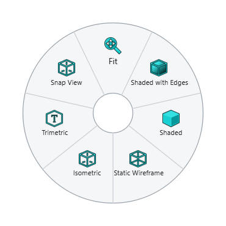

Mouse and view control
NX names the mouse buttons MB1 (left), MB2 (middle, or the wheel pressed) and MB3 (right). NX-Style gives them NX’s meaning in every 3D view.
| Mouse | Does |
|---|---|
MB1 click |
Select. Ctrl+MB1 adds to or removes from the selection. |
MB2 drag |
Rotate the view about its centre. |
Press and hold MB2 on the model, then drag |
Rotate about the point under the cursor. The cursor becomes a cross when the point is set. |
Shift+MB2 drag, or MB2+MB3 drag |
Pan. |
Ctrl+MB2 drag, or MB1+MB2 drag |
Zoom (dragging up zooms in). |
Wheel |
Zoom towards the cursor. |
MB2 click |
OK in the open feature dialog. On a drawing sheet it presses OK in the open drawing dialog too. |
MB2 click while a sketch tool is active |
Ends the tool (the line, rectangle, circle …), as in NX. |
MB3 click |
The context menu. |
Hold MB3 |
The radial menu: Fit, Snap View, Trimetric, Isometric and display modes over empty space; the object’s own commands over a part. |

View keys
| Key | View |
|---|---|
Home |
Trimetric |
End |
Isometric |
Ctrl+Alt+F / Ctrl+Alt+T / Ctrl+Alt+R / Ctrl+Alt+L |
Front / Top / Right / Left |
F8 |
Snap to the closest standard view |
Shift+F8 |
Look straight at the sketch being edited |
Ctrl+F |
Fit everything in the window |
F6 |
Zoom to a rectangle you drag |
F7 |
Rotate mode: MB1 drag rotates until Esc, MB2 or MB3 |
F5 |
Redraw the view |
The full list is on Keyboard shortcuts.
Changing the feel
The settings adjust the mouse:
-
rotate_degrees_per_pixel— how fast MB2 drag turns the view; -
zoom_at_cursor,invert_wheel_zoom,zoom_drag_up_zooms_in— zoom direction and centre; -
mb2_hold_sets_rotation_point_ms,mb3_hold_radial_menu_ms— how long a hold takes (0switches the radial menu off); -
mb2_click_is_ok— whether an MB2 click accepts the dialog; -
navigation—"native"uses FreeCAD 1.1’s own Siemens NX navigation style instead of NX-Style’s.